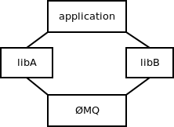
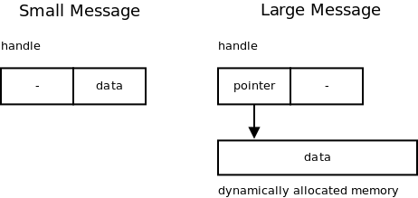
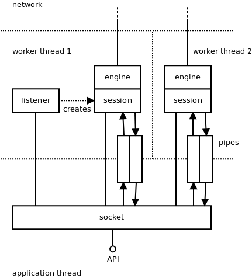
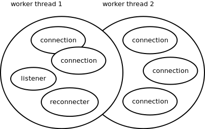
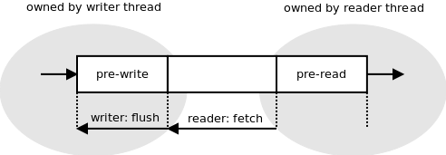

ZeroMQ
by Martin S'{u}strik
MQ is a messaging system, or “message-oriented middleware”, if you will. It’s used in environments as diverse as financial services, game development, embedded systems, academic research and aerospace.
Messaging systems work basically as instant messaging for applications. An application decides to communicate an event to another application (or multiple applications), it assembles the data to be sent, hits the “send” button and there we go—the messaging system takes care of the rest.
Unlike instant messaging, though, messaging systems have no GUI and assume no human beings at the endpoints capable of intelligent intervention when something goes wrong. Messaging systems thus have to be both fault-tolerant and much faster than common instant messaging.
ØMQ was originally conceived as an ultra-fast messaging system for stock trading and so the focus was on extreme optimization. The first year of the project was spent devising benchmarking methodology and trying to define an architecture that was as efficient as possible.
Later on, approximately in the second year of development, the focus shifted to providing a generic system for building distributed applications and supporting arbitrary messaging patterns, various transport mechanisms, arbitrary language bindings, etc.
During the third year the focus was mainly on improving usability and flattening the learning curve. We’ve adopted the BSD Sockets API, tried to clean up the semantics of individual messaging patterns, and so on.
Hopefully, this chapter will give an insight into how the three goals above translated into the internal architecture of ØMQ, and provide some tips for those who are struggling with the same problems.
Since its third year ØMQ has outgrown its codebase; there is an initiative to standardise the wire protocols it uses, and an experimental implementation of a ØMQ-like messaging system inside the Linux kernel, etc. These topics are not covered in this book. However, you can check online resources123 for further details.
Application vs. Library
ØMQ is a library, not a messaging server. It took us several years working on AMQP protocol, a financial industry attempt to standardise the wire protocol for business messaging—writing a reference implementation for it and participating in several large-scale projects heavily based on messaging technology—to realise that there’s something wrong with the classic client/server model of smart messaging server (broker) and dumb messaging clients.
Our primary concern at the time was with the performance: If there’s a server in the middle, each message has to pass the network twice (from the sender to the broker and from the broker to the receiver) inducing a penalty in terms of both latency and throughput. Moreover, if all the messages are passed through the broker, at some point it’s bound to become the bottleneck.
A secondary concern was related to large-scale deployments: when the deployment crosses organisational boundaries the concept of a central authority managing the whole message flow doesn’t apply any more. No company is willing to cede control to a server in different company; there are trade secrets and there’s legal liability. The result in practice is that there’s one messaging server per company, with hand-written bridges to connect it to messaging systems in other companies. The whole ecosystem is thus heavily fragmented, and maintaining a large number of bridges for every company involved doesn’t make the situation better. To solve this problem, we need a fully distributed architecture, an architecture where every component can be possibly governed by a different business entity. Given that the unit of management in server-based architecture is the server, we can solve the problem by installing a separate server for each component. In such a case we can further optimize the design by making the server and the component share the same processes. What we end up with is a messaging library.
ØMQ was started when we got an idea about how to make messaging work without a central server. It required turning the whole concept of messaging upside down and replacing the model of an autonomous centralised store of messages in the center of the network with a “smart endpoint, dumb network” architecture based on the end-to-end principle. The technical consequence of that decision was that ØMQ, from the very beginning, was a library, not an application.
In the meantime we’ve been able to prove that this architecture is both more efficient (lower latency, higher throughput) and more flexible (it’s easy to build arbitrary complex topologies instead of being tied to classic hub-and-spoke model).

One of the unintended consequences, however, was that opting for the library model improved the usability of the product. Over and over again users express their happiness about the fact that they don’t have to install and manage a stand-alone messaging server. It turns out that not having a server is a preferred option as it cuts operational cost (no need to have a messaging server admin) and improves time-to-market (no need to negotiate the need to run the server with the client, the management or the operations team).
The lesson learned is that when starting a new project, you should opt for the library design if at all possible. It’s pretty easy to create an application from a library by invoking it from a trivial program; however, it’s almost impossible to create a library from an existing executable. A library offers much more flexibility to the users, at the same time sparing them non-trivial administrative effort.
Global State
Global variables don’t play well with libraries. A library may be loaded several times in the process but even then there’s only a single set of global variables. Figure 1 shows a ØMQ library being used from two different and independent libraries. The application then uses both of those libraries.
When such a situation occurs, both instances of ØMQ access the same variables, resulting in race conditions, strange failures and undefined behaviour.
To prevent this problem, the ØMQ library has no global variables. Instead, a user of the library is responsible for creating the global state explicitly. The object containing the global state is called context. While from the user’s perspective context looks more or less like a pool of worker threads, from ØMQ’s perspective it’s just an object to store any global state that we happen to need. In the picture above, libA would have its own context and libB would have its own as well. There would be no way for one of them to break or subvert the other one.
The lesson here is pretty obvious: Don’t use global state in libraries. If you do, the library is likely to break when it happens to be instantiated twice in the same process.
Performance
When ØMQ was started, its primary goal was to optimize performance. Performance of messaging systems is expressed using two metrics: throughput—how many messages can be passed during a given amount of time; and latency—how long it takes for a message to get from one endpoint to the other.
Which metric should we focus on? What’s the relationship between the two? Isn’t it obvious? Run the test, divide the overall time of the test by number of messages passed and what you get is latency. Divide the number of messages by time and what you get is throughput. In other words, latency is the inverse value of throughput. Trivial, right?
Instead of starting coding straight away we spent some weeks investigating the performance metrics in detail and we found out that the relationship between throughput and latency is much more subtle than that, and often the metrics are quite counter-intuitive.
Imagine A sending messages to B. (See Figure 2.) The overall time of the test is 6 seconds. There are 5 messages passed. Therefore the throughput is 0.83 msgs/sec ($\frac{5}{6}$) and the latency is 1.2 sec ($\frac{6}{5}$), right?
Have a look at the diagram again. It takes a different time for each message to get from A to B: 2 sec, 2.5 sec, 3 sec, 3.5 sec, 4 sec. The average is 3 seconds, which is pretty far away from our original calculation of 1.2 second. This example shows the misconceptions people are intuitively inclined to make about performance metrics.
Now have a look at the throughput. The overall time of the test is 6 seconds. However, at A it takes just 2 seconds to send all the messages. From A’s perspective the throughput is 2.5 msgs/sec ($\frac{5}{2}$). At B it takes 4 seconds to receive all messages. So from B’s perspective the throughput is 1.25 msgs/sec ($\frac{5}{4}$). Neither of these numbers matches our original calculation of 1.2 msgs/sec.
To make a long story short, latency and throughput are two different metrics; that much is obvious. The important thing is to understand the difference between the two and their mutual relationship. Latency can be measured only between two different points in the system; There’s no such thing as latency at point A. Each message has its own latency. You can average the latencies of multiple messages; however, there’s no such thing as latency of a stream of messages.
Throughput, on the other hand, can be measured only at a single point of the system. There’s a throughput at the sender, there’s a throughput at the receiver, there’s a throughput at any intermediate point between the two, but there’s no such thing as overall throughput of the whole system. And throughput make sense only for a set of messages; there’s no such thing as throughput of a single message.
As for the relationship between throughput and latency, it turns out there really is a relationship; however, the formula involves integrals and we won’t discuss it here. For more information, read the literature on queueing theory.
There are many more pitfalls in benchmarking the messaging systems that we won’t go further into. The stress should rather be placed on the lesson learned: Make sure you understand the problem you are solving. Even a problem as simple as “make it fast” can take lot of work to understand properly. What’s more, if you don’t understand the problem, you are likely to build implicit assumptions and popular myths into your code, making the solution either flawed or at least much more complex or much less useful than it could possibly be.
Critical Path
We discovered during the optimization process that three factors have a crucial impact on performance:
-
Number of memory allocations
-
Number of system calls
-
Concurrency model
However, not every memory allocation or every system call has the same effect on performance. The performance we are interested in in messaging systems is the number of messages we can transfer between two endpoints during a given amount of time. Alternatively, we may be interested in how long it takes for a message to get from one endpoint to another.
However, given that ØMQ is designed for scenarios with long-lived connections, the time it takes to establish a connection or the time needed to handle a connection error is basically irrelevant. These events happen very rarely and so their impact on overall performance is negligible.
The part of a codebase that gets used very frequently, over and over again, is called the critical path; optimization should focus on the critical path.
Let’s have a look at an example: ØMQ is not extremely optimized with respect to memory allocations. For example, when manipulating strings, it often allocates a new string for each intermediate phase of the transformation. However, if we look strictly at the critical path—the actual message passing—we’ll find out that it uses almost no memory allocations. If messages are small, it’s just one memory allocation per 256 messages (these messages are held in a single large allocated memory chunk). If, in addition, the stream of messages is steady, without huge traffic peaks, the number of memory allocations on the critical path drops to zero (the allocated memory chunks are not returned to the system, but re-used over and over again).
Lesson learned: optimize where it makes difference. Optimizing pieces of code that are not on the critical path is wasted effort.
Allocating Memory
Assuming that all the infrastructure was initialised and a connection between two endpoints has been established, there’s only one thing to allocate when sending a message: the message itself. Thus, to optimize the critical path we had to look into how messages are allocated and passed up and down the stack.
It’s common knowledge in the high-performance networking field that the best performance is achieved by carefully balancing the cost of message allocation and the cost of message copying4. For small messages, copying is much cheaper than allocating memory. It makes sense to allocate no new memory chunks at all and instead to copy the message to preallocated memory whenever needed. For large messages, on the other hand, copying is much more expensive than memory allocation. It makes sense to allocate the message once and pass a pointer to the allocated block, instead of copying the data. This approach is called “zero-copy”.

ØMQ handles both cases in a transparent manner. A ØMQ message is represented by an opaque handle. The content of very small messages is encoded directly in the handle. So making a copy of the handle actually copies the message data. When the message is larger, it’s allocated in a separate buffer and the handle contains just a pointer to the buffer. Making a copy of the handle doesn’t result in copying the message data, which makes sense when the message is megabytes long (Figure 3). It should be noted that in the latter case the buffer is reference-counted so that it can be referenced by multiple handles without the need to copy the data.
Lesson learned: When thinking about performance, don’t assume there’s a single best solution. It may happen that there are several subclasses of the problem (e.g., small messages vs. large messages), each having its own optimal algorithm.
Batching
It has already been mentioned that the sheer number of system calls in a messaging system can result in a performance bottleneck. Actually, the problem is much more generic than that. There’s a non-trivial performance penalty associated with traversing the call stack and thus, when creating high-performance applications, it’s wise to avoid as much stack traversing as possible.
Consider Figure 4. To send four messages, you have to traverse the entire network stack four times (i.e., ØMQ, glibc, user/kernel space boundary, TCP implementation, IP implementation, Ethernet layer, the NIC itself and back up the stack again).
However, if you decide to join those messages into a single batch, there would be only one traversal of the stack (Figure 5). The impact on message throughput can be overwhelming: up to two orders of magnitude, especially if the messages are small and hundreds of them can be packed into a single batch.
On the other hand, batching can have negative impact on latency. Let’s take, for example, the well-known Nagle’s algorithm, as implemented in TCP. It delays the outbound messages for a certain amount of time and merges all the accumulated data into a single packet. Obviously, the end-to-end latency of the first message in the packet is much worse than the latency of the last one. Thus, it’s common for applications that need consistently low latency to switch Nagle’s algorithm off. It’s even common to switch off batching on all levels of the stack (e.g., NIC’s interrupt coalescing feature).
But again, no batching means extensive traversing of the stack and results in low message throughput. We seem to be caught in a throughput versus latency dilemma.
ØMQ tries to deliver consistently low latencies combined with high throughput using the following strategy: when message flow is sparse and doesn’t exceed the network stack’s bandwidth, ØMQ turns all the batching off to improve latency. The trade-off here is somewhat higher CPU usage—we still have to traverse the stack frequently. However, that isn’t considered to be a problem in most cases.
When the message rate exceeds the bandwidth of the network stack, the messages have to be queued—stored in memory till the stack is ready to accept them. Queueing means the latency is going to grow. If the message spends one second in the queue, end-to-end latency will be at least one second. What’s even worse, as the size of the queue grows, latencies will increase gradually. If the size of the queue is not bound, the latency can exceed any limit.
It has been observed that even though the network stack is tuned for lowest possible latency (Nagle’s algorithm switched off, NIC interrupt coalescing turned off, etc.) latencies can still be dismal because of the queueing effect, as described above.
In such situations it makes sense to start batching aggressively. There’s nothing to lose as the latencies are already high anyway. On the other hand, aggressive batching improves throughput and can empty the queue of pending messages—which in turn means the latency will gradually drop as the queueing delay decreases. Once there are no outstanding messages in the queue, the batching can be turned off to improve the latency even further.
One additional observation is that the batching should only be done on the topmost level. If the messages are batched there, the lower layers have nothing to batch anyway, and so all the batching algorithms underneath do nothing except introduce additional latency.
Lesson learned: To get optimal throughput combined with optimal response time in an asynchronous system, turn off all the batching algorithms on the low layers of the stack and batch on the topmost level. Batch only when new data are arriving faster than they can be processed.
Architecture Overview
Up to this point we have focused on generic principles that make ØMQ fast. From now on we’ll have a look at the actual architecture of the system (Figure 6).

The user interacts with ØMQ using so-called “sockets”. They are pretty similar to TCP sockets, the main difference being that each socket can handle communication with multiple peers, a bit like unbound UDP sockets do.
The socket object lives in the user’s thread (see the discussion of threading models in the next section). Aside from that, ØMQ is running multiple worker threads that handle the asynchronous part of the communication: reading data from the network, enqueueing messages, accepting incoming connections, etc.
There are various objects living in the worker threads. Each of these objects is owned by exactly one parent object (ownership is denoted by a simple full line in the diagram). The parent can live in a different thread than the child. Most objects are owned directly by sockets; however, there are couple of cases where an object is owned by an object which is owned by the socket. What we get is a tree of objects, with one such tree per socket. The tree is used during shut down; no object can shut itself down until it closes all its children. This way we can ensure that the shut down process works as expected; for example, that pending outbound messages are pushed to the network prior to terminating the sending process.
Roughly speaking, there are two kinds of asynchronous objects; there are objects that are not involved in message passing and there are objects that are. The former have to do mainly with connection management. For example, a TCP listener object listens for incoming TCP connections and creates an engine/session object for each new connection. Similarly, a TCP connector object tries to connect to the TCP peer and when it succeeds it creates an engine/session object to manage the connection. When such connection fails, the connector object tries to re-establish it.
The latter are objects that are handling data transfer itself. These objects are composed of two parts: the session object is responsible for interacting with the ØMQ socket, and the engine object is responsible for communication with the network. There’s only one kind of the session object, but there’s a different engine type for each underlying protocol ØMQ supports. Thus, we have TCP engines, IPC (inter-process communication) engines, PGM5 engines, etc. The set of engines is extensible—in the future we may choose to implement, say, a WebSocket engine or an SCTP engine.
The sessions are exchanging messages with the sockets. There are two directions to pass messages in and each direction is handled by a pipe object. Each pipe is basically a lock-free queue optimized for fast passing of messages between threads.
Finally, there’s a context object (discussed in the previous sections but not shown on the diagram) that holds the global state and is accessible by all the sockets and all the asynchronous objects.
Concurrency Model
One of the requirements for ØMQ was to take advantage of multi-core boxes; in other words, to scale the throughput linearly with the number of available CPU cores.
Our previous experience with messaging systems showed that using multiple threads in a classic way (critical sections, semaphores, etc.) doesn’t yield much performance improvement. In fact, a multi-threaded version of a messaging system can be slower than a single-threaded one, even if measured on a multi-core box. Individual threads are simply spending too much time waiting for each other while, at the same time, eliciting a lot of context switching that slows the system down.
Given these problems, we’ve decided to go for a different model. The goal was to avoid locking entirely and let each thread run at full speed. The communication between threads was to be provided via asynchronous messages (events) passed between the threads. This, as insiders know, is the classic actor model.
The idea was to launch one worker thread per CPU core—having two threads sharing the same core would only mean a lot of context switching for no particular advantage. Each internal ØMQ object, such as say, a TCP engine, would be tightly bound to a particular worker thread. That, in turn, means that there’s no need for critical sections, mutexes, semaphores and the like. Additionally, these ØMQ objects won’t be migrated between CPU cores so would thus avoid the negative performance impact of cache pollution (Figure 7).

This design makes a lot of traditional multi-threading problems disappear. Nevertheless, there’s a need to share the worker thread among many objects, which in turn means there has to be some kind of cooperative multitasking. This means we need a scheduler; objects need to be event-driven rather than being in control of the entire event loop; we have to take care of arbitrary sequences of events, even very rare ones; we have to make sure that no object holds the CPU for too long; etc.
In short, the whole system has to become fully asynchronous. No object can afford to do a blocking operation, because it would not only block itself but also all the other objects sharing the same worker thread. All objects have to become, whether explicitly or implicitly, state machines. With hundreds or thousands of state machines running in parallel you have to take care of all the possible interactions between them and—most importantly—of the shutdown process.
It turns out that shutting down a fully asynchronous system in a clean way is a dauntingly complex task. Trying to shut down a thousand moving parts, some of them working, some idle, some in the process of being initiated, some of them already shutting down by themselves, is prone to all kinds of race conditions, resource leaks and similar. The shutdown subsystem is definitely the most complex part of ØMQ. A quick check of the bug tracker indicates that some 30–50% of reported bugs are related to shutdown in one way or another.
Lesson learned: When striving for extreme performance and scalability, consider the actor model; it’s almost the only game in town in such cases. However, if you are not using a specialised system like Erlang or ØMQ itself, you’ll have to write and debug a lot of infrastructure by hand. Additionally, think, from the very beginning, about the procedure to shut down the system. It’s going to be the most complex part of the codebase and if you have no clear idea how to implement it, you should probably reconsider using the actor model in the first place.
Lock-Free Algorithms
Lock-free algorithms have been in vogue lately. They are simple mechanisms for inter-thread communication that don’t rely on the kernel-provided synchronisation primitives, such as mutexes or semaphores; rather, they do the synchronisation using atomic CPU operations, such as atomic compare-and-swap (CAS). It should be understood that they are not literally lock-free—instead, locking is done behind the scenes on the hardware level.
ØMQ uses a lock-free queue in pipe objects to pass messages between the user’s threads and ØMQ’s worker threads. There are two interesting aspects to how ØMQ uses the lock-free queue.
First, each queue has exactly one writer thread and exactly one reader thread. If there’s a need for 1-to-N communication, multiple queues are created (Figure 8). Given that this way the queue doesn’t have to take care of synchronising the writers (there’s only one writer) or readers (there’s only one reader) it can be implemented in an extra-efficient way.
Second, we realised that while lock-free algorithms were more efficient than classic mutex-based algorithms, atomic CPU operations are still rather expensive (especially when there’s contention between CPU cores) and doing an atomic operation for each message written and/or each message read was slower than we were willing to accept.
The way to speed it up—once again—was batching. Imagine you had 10 messages to be written to the queue. It can happen, for example, when you received a network packet containing 10 small messages. Receiving a packet is an atomic event; you cannot get half of it. This atomic event results in the need to write 10 messages to the lock-free queue. There’s not much point in doing an atomic operation for each message. Instead, you can accumulate the messages in a “pre-write” portion of the queue that’s accessed solely by the writer thread, and then flush it using a single atomic operation.
The same applies to reading from the queue. Imagine the 10 messages above were already flushed to the queue. The reader thread can extract each message from the queue using an atomic operation. However, it’s overkill; instead, it can move all the pending messages to a “pre-read” portion of the queue using a single atomic operation. Afterwards, it can retrieve the messages from the “pre-read” buffer one by one. “Pre-read” is owned and accessed solely by the reader thread and thus no synchronisation whatsoever is needed in that phase.

The arrow on the left of Figure 9 shows how the pre-write buffer can be flushed to the queue simply by modifying a single pointer. The arrow on the right shows how the whole content of the queue can be shifted to the pre-read by doing nothing but modifying another pointer.
Lesson learned: Lock-free algorithms are hard to invent, troublesome to implement and almost impossible to debug. If at all possible, use an existing proven algorithm rather than inventing your own. When extreme performance is required, don’t rely solely on lock-free algorithms. While they are fast, the performance can be significantly improved by doing smart batching on top of them.
API
The user interface is the most important part of any product. It’s the only part of your program visible to the outside world and if you get it wrong the world will hate you. In end-user products it’s either the GUI or the command line interface. In libraries it’s the API.
In early versions of ØMQ the API was based on AMQP’s model of exchanges and queues6. I spent the end of 2009 rewriting it almost from scratch to use the BSD Socket API instead. That was the turning point; ØMQ adoption soared from that point on. While before it was a niche product used by a bunch of messaging experts, afterwards it became a handy commonplace tool for anybody. In a year or so the size of the community increased tenfold, some 20 bindings to different languages were implemented, etc.
The user interface defines the perception of a product. With basically no change to the functionality—just by changing the API—ØMQ changed from an “enterprise messaging” product to a “networking” product. In other words, the perception changed from “a complex piece of infrastructure for big banks” to “hey, this helps me to send my 10-byte-long message from application A to application B”.
Lesson learned: Understand what you want your project to be and design the user interface accordingly. Having a user interface that doesn’t align with the vision of the project is a 100% guaranteed way to fail.
One of the important aspects of the move to the BSD Sockets API was that it wasn’t a revolutionary freshly invented API, but an existing and well-known one. Actually, the BSD Sockets API is one of the oldest APIs still in active use today; it dates back to 1983 and 4.2BSD Unix. It’s been widely used and stable for literally decades.
The above fact brings a lot of advantages. Firstly, it’s an API that everybody knows, so the learning curve is ludicrously flat. Even if you’ve never heard of ØMQ, you can build your first application in couple of minutes thanks to the fact that you are able to reuse your BSD Sockets knowledge.
Secondly, using a widely implemented API enables integration of ØMQ with existing technologies. For example, exposing ØMQ objects as “sockets” or “file descriptors” allows for processing TCP, UDP, pipe, file and ØMQ events in the same event loop. Another example: the experimental project to bring ØMQ-like functionality to the Linux kernel7 turned out to be pretty simple to implement. By sharing the same conceptual framework it can re-use a lot of infrastructure already in place.
Thirdly and probably most importantly, the fact that the BSD Sockets API survived almost three decades despite numerous attempts to replace it means that there is something inherently right in the design. BSD Sockets API designers have—whether deliberately or by chance—made the right design decisions. By adopting the API we can automatically share those design decisions without even knowing what they were and what problem they were solving.
Lesson learned: While code reuse has been promoted from time immemorial and pattern reuse joined in later on, it’s important to think of reuse in an even more generic way. When designing a product, have a look at similar products. Check which have failed and which have succeeded; learn from the successful projects. Don’t succumb to Not Invented Here syndrome. Reuse the ideas, the APIs, the conceptual frameworks, whatever you find appropriate. By doing so you are allowing users to reuse their existing knowledge. At the same time you may be avoiding technical pitfalls you are not even aware of at the moment.
Messaging Patterns
In any messaging system, the most important design problem is that of how to provide a way for the user to specify which messages are routed to which destinations. There are two main approaches, and I believe this dichotomy is quite generic and applicable to basically any problem encountered in the domain of software.
One approach is to adopt the Unix philosophy of “do one thing and do it well”. What this means is that the problem domain should be artificially restricted to a small and well-understood area. The program should then solve this restricted problem in a correct and exhaustive way. An example of such approach in the messaging area is MQTT8. It’s a protocol for distributing messages to a set of consumers. It can’t be used for anything else (say for RPC) but it is easy to use and does message distribution well.
The other approach is to focus on generality and provide a powerful and highly configurable system. AMQP is an example of such a system. Its model of queues and exchanges provides the user with the means to programmatically define almost any routing algorithm they can think of. The trade-off, of course, is a lot of options to take care of.
ØMQ opts for the former model because it allows the resulting product to be used by basically anyone, while the generic model requires messaging experts to use it. To demonstrate the point, let’s have a look how the model affects the complexity of the API. What follows is implementation of RPC client on top of a generic system (AMQP):
connect ("192.168.0.111")
exchange.declare (exchange="requests", type="direct", passive=false,
durable=true, no-wait=true, arguments={})
exchange.declare (exchange="replies", type="direct", passive=false,
durable=true, no-wait=true, arguments={})
reply-queue = queue.declare (queue="", passive=false, durable=false,
exclusive=true, auto-delete=true, no-wait=false, arguments={})
queue.bind (queue=reply-queue, exchange="replies",
routing-key=reply-queue)
queue.consume (queue=reply-queue, consumer-tag="", no-local=false,
no-ack=false, exclusive=true, no-wait=true, arguments={})
request = new-message ("Hello World!")
request.reply-to = reply-queue
request.correlation-id = generate-unique-id ()
basic.publish (exchange="requests", routing-key="my-service",
mandatory=true, immediate=false)
reply = get-message ()
On the other hand, ØMQ splits the messaging landscape into so-called “messaging patterns”. Examples of the patterns are “publish/subscribe”, “request/reply” or “parallelised pipeline”. Each messaging pattern is completely orthogonal to other patterns and can be thought of as a separate tool.
What follows is the re-implementation of the above application using ØMQ’s request/reply pattern. Note how all the option tweaking is reduced to the single step of choosing the right messaging pattern (“REQ”):
s = socket (REQ)
s.connect ("tcp://192.168.0.111:5555")
s.send ("Hello World!")
reply = s.recv ()
Up to this point we’ve argued that specific solutions are better than generic solutions. We want our solution to be as specific as possible. However, at the same time we want to provide our customers with as wide a range of functionality as possible. How can we solve this apparent contradiction?
The answer consists of two steps:
-
Define a layer of the stack to deal with a particular problem area (e.g. transport, routing, presentation, etc.).
-
Provide multiple implementations of the layer. There should be a separate non-intersecting implementation for each use case.
Let’s have a look at the example of the transport layer in the Internet stack. It’s meant to provide services such as transferring data streams, applying flow control, providing reliability, etc., on the top of the network layer (IP). It does so by defining multiple non-intersecting solutions: TCP for connection-oriented reliable stream transfer, UDP for connectionless unreliable packet transfer, SCTP for transfer of multiple streams, DCCP for unreliable connections and so on.
Note that each implementation is completely orthogonal: a UDP endpoint cannot speak to a TCP endpoint. Neither can a SCTP endpoint speak to a DCCP endpoint. It means that new implementations can be added to the stack at any moment without affecting the existing portions of the stack. Conversely, failed implementations can be forgotten and discarded without compromising the viability of the transport layer as a whole.
The same principle applies to messaging patterns as defined by ØMQ. Messaging patterns form a layer (the so-called “scalability layer”) on top of the transport layer (TCP and friends). Individual messaging patterns are implementations of this layer. They are strictly orthogonal—the publish/subscribe endpoint can’t speak to the request/reply endpoint, etc. Strict separation between the patterns in turn means that new patterns can be added as needed and that failed experiments with new patterns won’t hurt the existing patterns.
Lesson learned: When solving a complex and multi-faceted problem it may turn out that a monolithic general-purpose solution may not be the best way to go. Instead, we can think of the problem area as an abstract layer and provide multiple implementations of this layer, each focused on a specific well-defined use case. When doing so, delineate the use case carefully. Be sure about what is in the scope and what is not. By restricting the use case too aggressively the application of your software may be limited. If you define the problem too broadly, however, the product may become too complex, blurry and confusing for the users.
Conclusion
As our world becomes populated with lots of small computers connected via the Internet—mobile phones, RFID readers, tablets and laptops, GPS devices, etc.—the problem of distributed computing ceases to be the domain of academic science and becomes a common everyday problem for every developer to tackle. The solutions, unfortunately, are mostly domain-specific hacks. This article summarises our experience with building a large-scale distributed system in a systematic manner. It focuses on problems that are interesting from a software architecture point of view, and we hope that designers and programmers in the open source community will find it useful.
-
For example, http://hal.inria.fr/docs/00/29/28/31/PDF/Open-MX-IOAT.pdf. See different handling of “small”, “medium” and “large” messages. ↩
-
Reliable multicast protocol, see RFC 3208. ↩
-
See the AMQP specification at http://www.amqp.org/specification/1.0/amqp-org-download. From a historical perspective it’s interesting to have a look at the white paper from 2007 that tries to reconcile AMQP with a brokerless model of messaging. The white paper is at http://www.zeromq.org/whitepapers:messaging-enabled-network. ↩